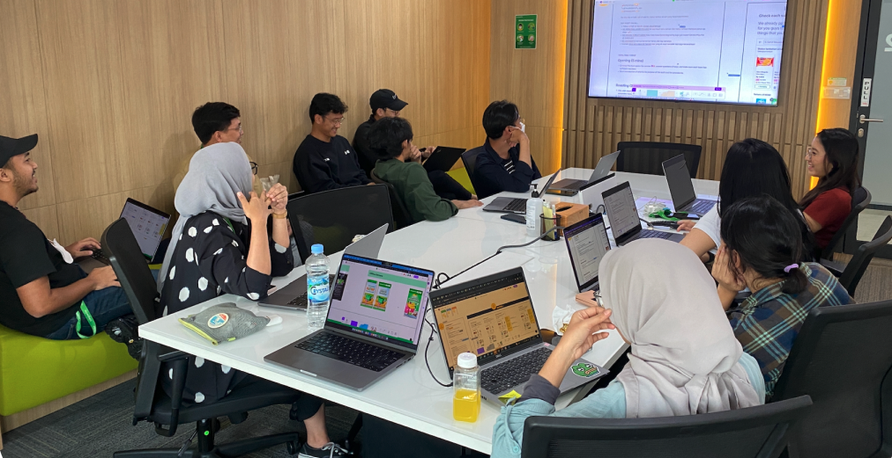
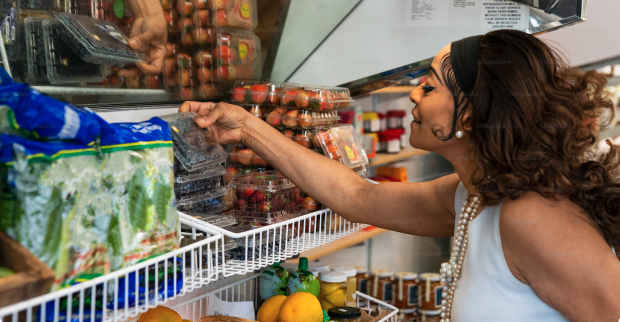
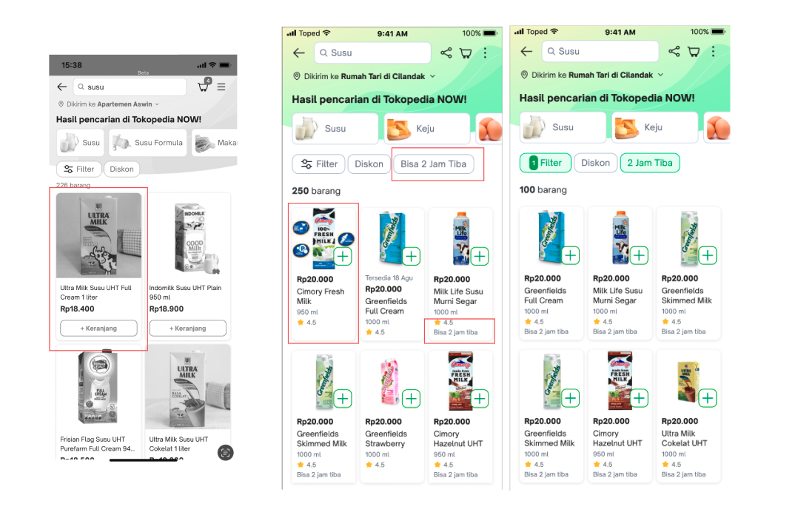
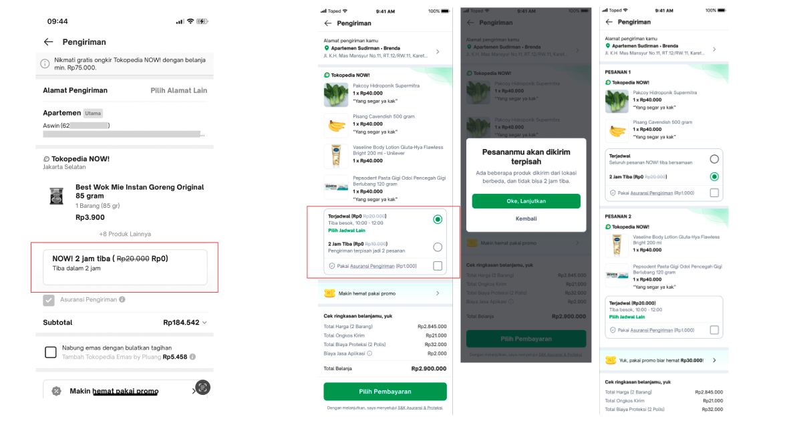
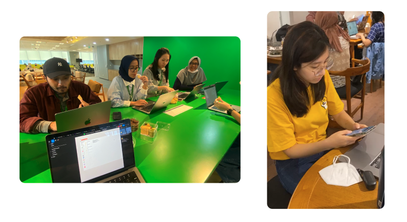
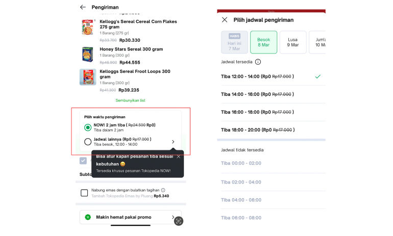
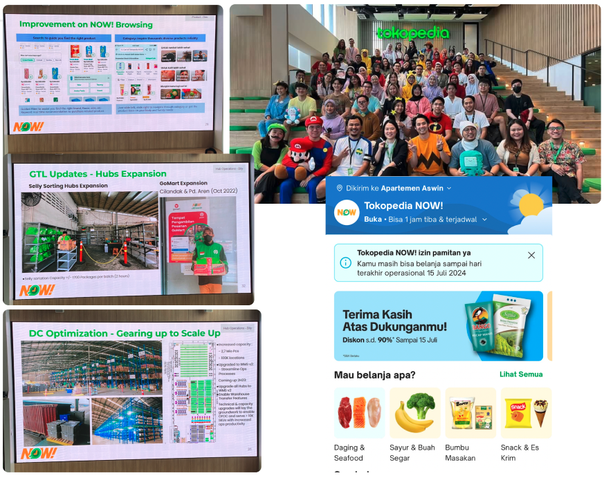

Tokopedia Grocery, officially known as Tokopedia NOW!, was facing stagnating Monthly Unique Buyers (MUB) growth alongside relatively flat order values per customer. One of the core challenges came from the limited variety and scalability of available grocery SKUs, heavily influenced by operational constraints within compact urban warehouse spaces that prioritized rapid delivery speed across major cities.
To address these challenges, Design, Product, and Business teams collaboratively reimagined the broader grocery experience ecosystem beyond conventional interface improvements. Together, we explored strategic scenarios that balanced customer expectations for product variety and fast delivery with operational efficiency and long-term business sustainability. This initiative became a holistic effort to rethink how product experience, logistics operations, and business scalability could work together more effectively within Tokopedia NOW!’s rapid-commerce environment.
Tokopedia is one of Indonesia’s leading technology and e-commerce platforms, connecting millions of buyers, sellers, and businesses through an integrated digital commerce ecosystem. The platform has played a major role in accelerating Indonesia’s digital economy while supporting the growth of local merchants and MSMEs nationwide.
Tokopedia NOW! was Tokopedia’s rapid-commerce grocery service focused on delivering daily essentials through fast and efficient urban fulfillment operations. The service balanced delivery speed, operational scalability, and product availability to create a more convenient grocery shopping experience across major cities in Indonesia. It was officially discontinued its operations in July 2024 as part of GoTo Group’s broader strategic consolidation and operational efficiency initiatives.
"Understanding the holistic business process of Tokopedia NOW! helped the Design Team to think more strategically in developing and proposing design solutions."
Cross-functional collaboration within Tokopedia NOW! was highly open and collaborative across Product, Design, Business, and Marketing teams. Through regular biweekly cadences, teams consistently shared updates, operational challenges, market findings, and strategic opportunities, creating a strong foundation for collective ideation and decision-making.
During these discussions, Product and Business teams identified that Monthly Unique Buyers (MUBs) had started to stagnate after the initial growth driven by promotional campaigns. At the same time, Marketing research revealed that many active users perceived Tokopedia NOW!’s product assortment as limited and less varied, resulting in repetitive purchasing behaviors and stagnant basket sizes. Despite this, users consistently valued Tokopedia NOW!’s fast delivery experience and reliable product quality compared to competitors.
While recognizing the opportunity to improve SKU variety and customer growth, Business and Operations teams also highlighted a major operational constraint: limited warehouse capacity within urban areas that supported Tokopedia NOW!’s rapid delivery model. Expanding storage space and increasing SKU availability therefore became a complex challenge that required balancing customer expectations, operational efficiency, and long-term business sustainability.


Once the teams aligned on both customer pain points and operational business challenges, we conducted a collaborative ideation session involving Design, Product, Business, and Marketing teams to explore scalable opportunities for improving growth, SKU variety, and long-term operational sustainability. The Design Team facilitated the session using a rapid design thinking approach to encourage open discussion, challenge assumptions, and identify potential scenarios worth exploring together.
Several key opportunities emerged during the ideation process:
Building on these discussions, the Design Team proposed a new “warehouse-transfer” experience model that connected urban warehouses specializing in fresh products with larger outskirt warehouses focused on dry goods and household essentials. This concept allowed users to access broader product variety within a single shopping journey while enabling more operationally sustainable scheduled delivery experiences through consolidated fulfillment flows.
Much to our surprise, the concept strongly resonated with cross-functional leaders and was quickly acknowledged as a promising direction for Tokopedia NOW!’s future growth strategy. The initiative later evolved into the “One Fulfillment, One Checkout” (OFOC) exploration, a previously discussed but unexecuted strategic vision within Tokopedia, and became a collaborative effort led by senior Product and Business leaders to further validate and operationalize the opportunity across teams.
Once the teams aligned on exploring the “One Fulfillment, One Checkout” (OFOC) initiative, Design and Product teams began reimagining how the grocery shopping experience could evolve within Tokopedia NOW!’s ecosystem. The exploration focused on improving product discoverability across significantly larger SKU volumes, helping users differentiate products sourced from urban and outskirt warehouses, and introducing clearer delivery expectations between instant and scheduled fulfillment options.
As Design Manager, I collaborated closely with one Product Designer and one UX Writer to deeply evaluate Tokopedia NOW!’s existing experience, benchmark grocery platforms across Indonesia and global markets, and align with multiple internal product teams responsible for product cards, checkout systems, and logistics experiences. Through rapid ideation and cross-functional collaboration, we explored various experience directions that balanced feasibility, scalability, and customer convenience while supporting the broader growth ambitions of Tokopedia NOW!.
Several key design improvements emerged from the exploration process:
One of the most challenging areas was redesigning the checkout experience from the ground up to support hybrid fulfillment logic. Previously, Tokopedia NOW! only supported a single instant-delivery model. Introducing combined scheduled deliveries required new user education approaches, operational coordination, and interaction patterns to help customers understand how different fulfillment methods impacted delivery timing, order grouping, and overall convenience.


To validate these experience directions, we conducted rapid prototype testing sessions with active Tokopedia NOW! users in Jakarta. Overall, users responded positively to the expanded product assortment and improved browsing density, as they felt encouraged to explore and add more items into their carts during shopping sessions. While several participants initially questioned the meaning behind the “2-Hour Delivery” labels attached to certain SKUs, most quickly adapted by prioritizing those products or using delivery filters due to their existing preference for fast grocery fulfillment.
Interestingly, the strongest behavioral insights emerged during the checkout process. Most users naturally expected instant delivery as the default shopping behavior and only fully understood the fulfillment differences once delivery options were presented during checkout. Although users appreciated the broader SKU variety enabled by combined fulfillment flows, many still preferred keeping instant delivery as the primary default experience, even if it meant splitting orders into separate deliveries. These findings became an important learning point for the Design Team in balancing future-oriented operational innovation with deeply ingrained user expectations around urgency, convenience, and everyday grocery shopping behaviors.


"I like that now I get the chance to see more products to buy. But I will need to readjust my current habit if it is going to be delivered by tomorrow." - D, 28 (F)
